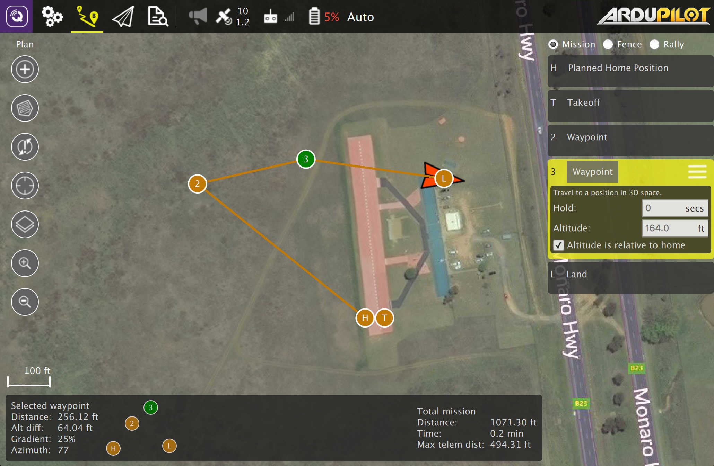

Plan View

The Plan View is used to plan autonomous missions for you Vehicle. Once the mission is planned and sent to the vehicle, you switch to the Fly View to fly the mission.
If your Vehicle supports a GeoFence or Rally Points you can also set those up from the Plan View.
The image above shows a simple mission which starts with a takeoff, flies through two waypoints and then lands.
The steps to creating a missions are:
- Change to Plan View
- Add commands to the mission and edit as needed
- Send the mission to the vehicle
- Change to Fly View and fly your mission
Plan Tools
On the left edge of the screen you will see the Plan Tools. The order of tools from top to bottom is:
- Add Commands
- Survey
- Sync
- Center map
- Map Type
- Zoom In/Out
Add Commands
Click to activate the Add Commands tool. While active, clicking in the map will add new mission commands at the clicked location. The tool will stay active until you click it again.
Sync
The Sync tools allows you to move Missions back and forth to your Vehicle or a file. Before you fly a mission you must be sure to send your Mission to your vehicle. The tool will change to have an "!" within it to indicate that you have changes to your Mission which you have not sent to your vehicle.
The Sync tool provides the following functionality:
- Send to Vehicle
- Load from Vehicle
- Save to File
- Load from File
- Remove All
Survey
Survey allows you to fly a grid pattern over a polygonal area.
Mission Command List
On the right edge of the display is the list of mission commands for this mission. You can click on one of these to edit the values for the item. Above are a set of options to switch between editing the Mission, GeoFence and Rally Points.
Mission Command Editors
Click on a mission command to show its editor which allows you to specify the values for the command. You can also change the type of the command by clicking on the command name, "Waypoint" in this example. This allows you to pick from the set up available commands to build your mission. To the right of the command name is a menu you can open by clicking. This menu provides you access to additional options such as Insert and Delete.
Planned Home Position
A mission always has a "Planned Home Position" associated with it. This is used to simulate the home position of the vehicle such that waypoint lines can be drawn correctly to the first actual waypoint. Keep in mind that the actual home position for a mission is set by the vehicle and may differ from the "planned" home position if you don't begin your mission with the vehicle in the same location as "planned".
Mission Display
In the center of the map you will see a visualization of your current mission. You can click on the inicators to select then and then you can also drag them around to move them.
Mission Height Display
At the bottom of the map you will see a representation of the height differences between your mission commands. To the left of that is information for the currently selected command relative to the previous command. For example: Distance from previous waypoint.